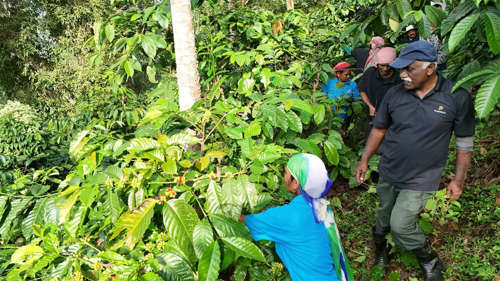
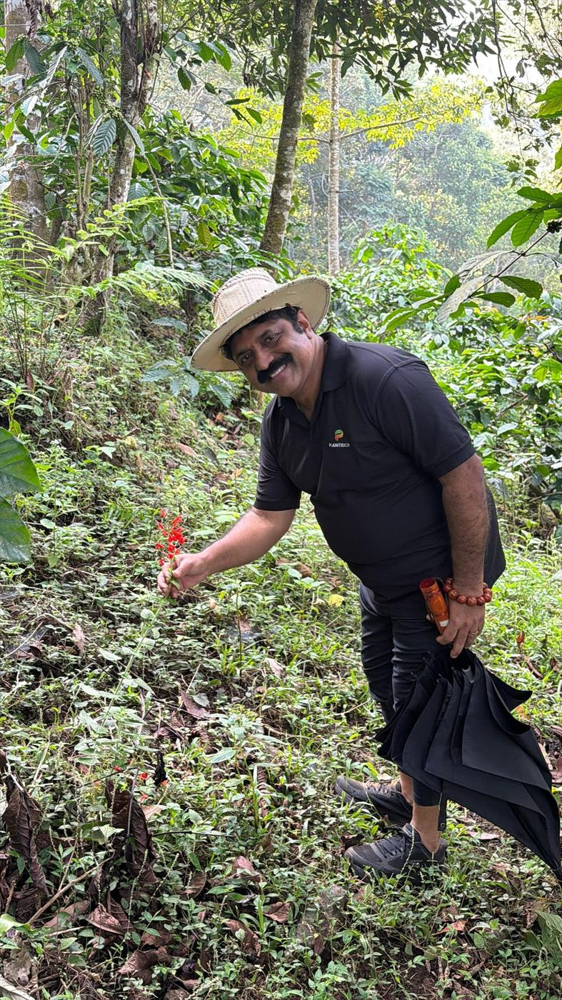

Farm walk
Explore the plantation landscape with our team and discover the crops, trees and farming practices that make Nechekattu Farm unique.
Walk through the coffee trees. Discover the spices. Listen to the birds. Experience the hills.
Meet the landscape through the work, crops and quiet moments that make every visit different.
Register Your Interest
Explore the plantation landscape with our team and discover the crops, trees and farming practices that make Nechekattu Farm unique.

During the harvest season, visitors may have the opportunity to observe coffee harvesting and learn about selective picking. Availability depends on the season and daily farm activities.

Discover how coffee cherries are handled after harvest and learn about processing, drying methods and raised drying beds.

Explore cardamom, pepper and other spice crops and learn how these plants grow in the high ranges of Kerala.

Observe birdlife in a natural plantation setting. Bring binoculars and enjoy a quiet walk; sightings depend on natural conditions.

Capture the landscapes, plantation scenery, coffee cherries, spices and natural beauty of the Western Ghats. Please ask before photographing people.
This is the indicative harvest window supplied by the farm. Actual activities depend on crop conditions, weather and daily farm schedules.
Please check your preferred date in advance. Harvesting, processing and drying demonstrations may not be available on every visit.
Enquire About Your DatesOur farm and walking trails are smoke-free and alcohol-free. Help us keep the landscape welcoming for people and wildlife.
A walk that works for your group.
Please let us know if anyone requires a shorter walk or easier terrain so our team can advise you before your visit.
The best date depends on your interests and current farm conditions. The indicative coffee harvest window is November–January, but please enquire in advance so the team can advise on weather, activities and access.
Possibly during the harvest season, subject to crop conditions and the daily farm schedule. Harvesting is not guaranteed on a particular date.
Spice garden walks may be arranged as part of a farm visit. Please include the crops you are interested in when preparing your enquiry.
Quiet birdwatching may form part of your farm walk. Bring binoculars if you have them, avoid playback calls, and remember that bird sightings are never guaranteed.
Please share the ages and needs of your group in your enquiry. The farm team can advise on a suitable route, supervision and current conditions before confirming a visit.
Wear comfortable clothing and trekking shoes with good grip. Check with the team about current trail and weather conditions before you arrive.
Yes. You may bring food and snacks; a refillable water bottle is encouraged. Please take all packaging and litter back with you.
Please register your interest and obtain confirmation from the farm team before travelling. An enquiry is a request and does not confirm a booking.
No. Wildlife movement is natural and unpredictable. Visits focus on the farm and landscape; wildlife encounters are never guaranteed.

Share your preferred dates and interests. Our team can advise on the experiences available before your visit.